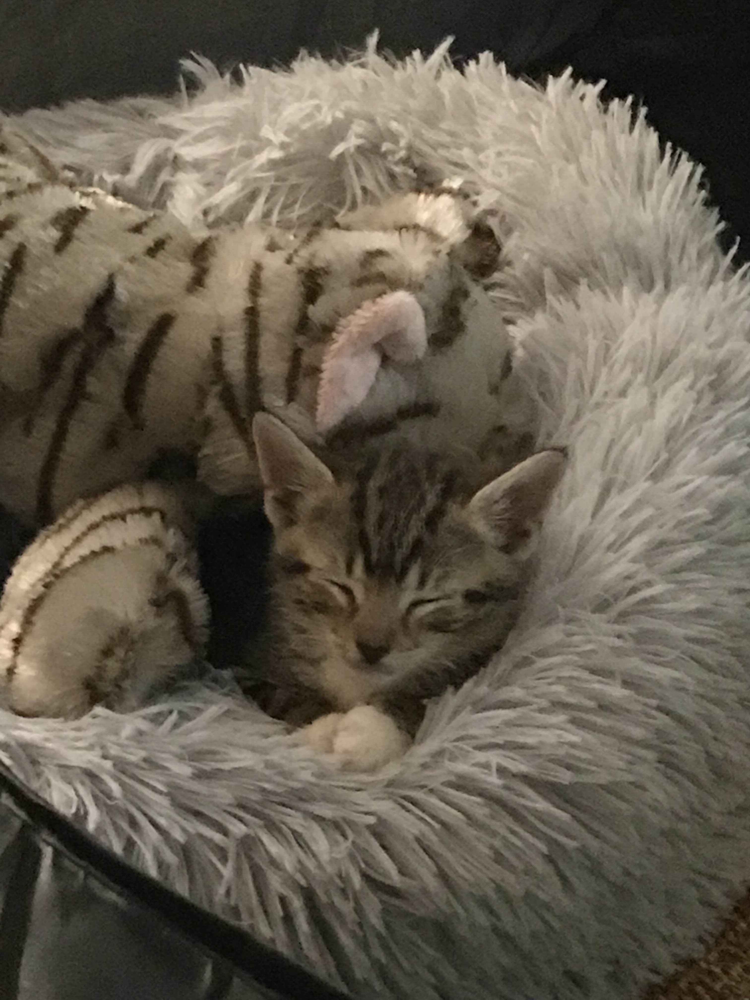
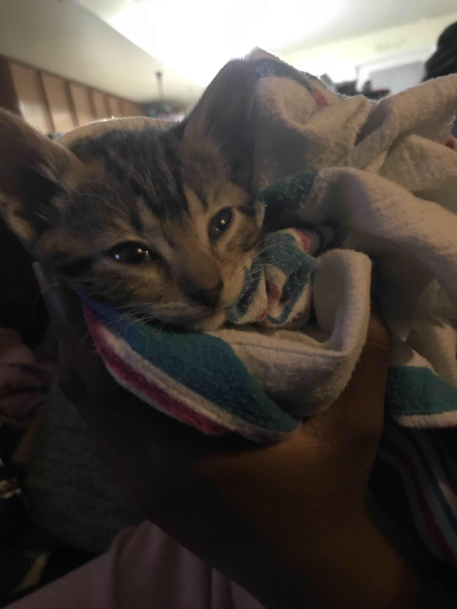
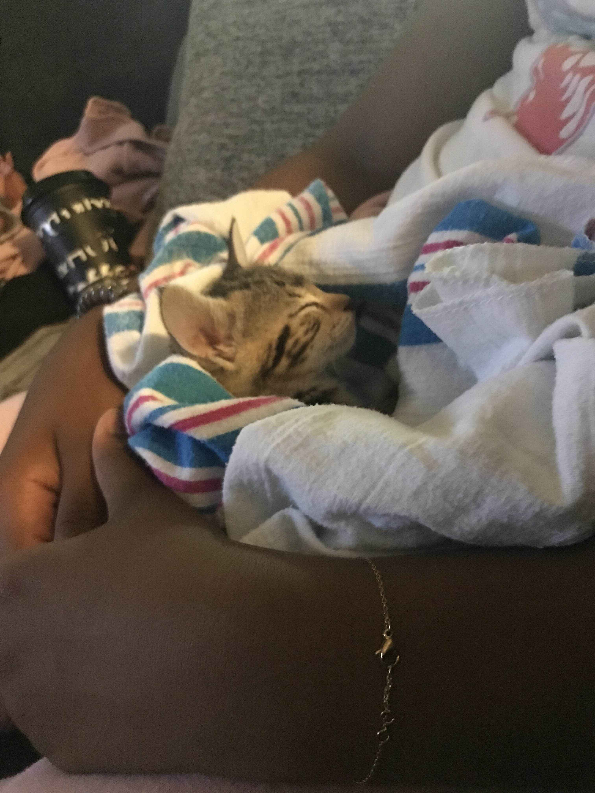

Ruby is a playful little ball of fluff with a heart full of curiosity! This tiny kitten is always on the lookout for her next adventure, whether it’s chasing after a wiggly string or pouncing on her own shadow. With her bright, sparkling eyes and soft, velvety fur, Ruby captures hearts wherever she goes. Her playful antics are guaranteed to bring a smile to your face, and her tiny meows are as sweet as her personality. When she’s not busy exploring, you can find her snuggled up in a cozy spot, dreaming of her next big escapade. Ruby is also a champion purr-er, and there’s nothing she loves more than curling up in your lap for a cozy cuddle session. With her charming spirit and endless love, Ruby is sure to be your forever friend!
  
Other pets that youd love to meet!